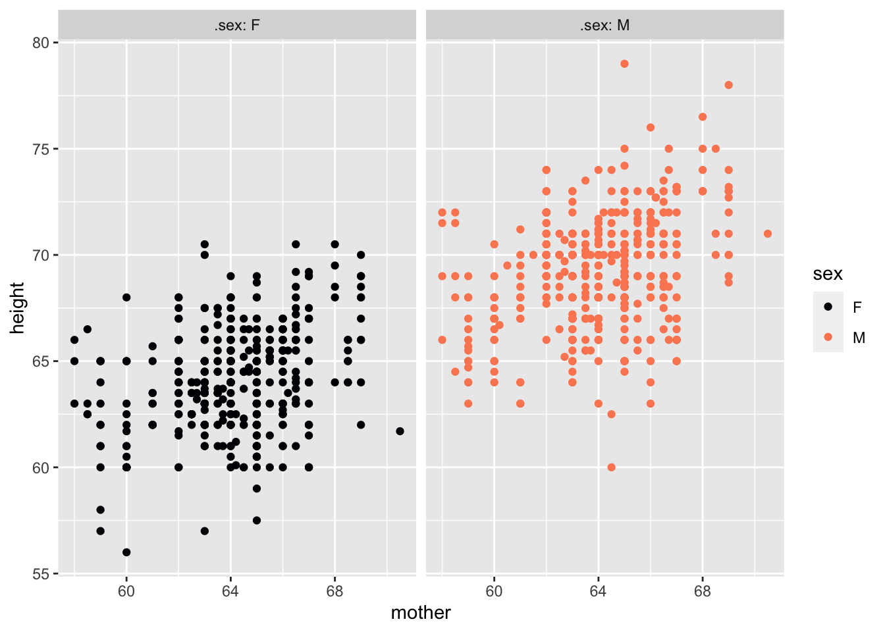
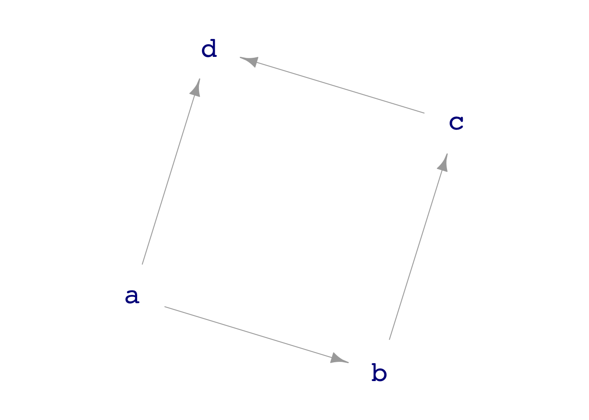
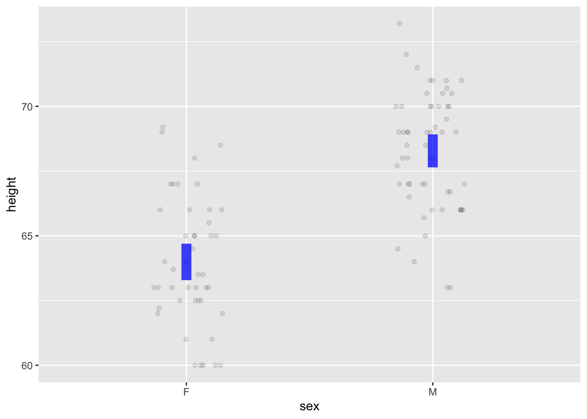
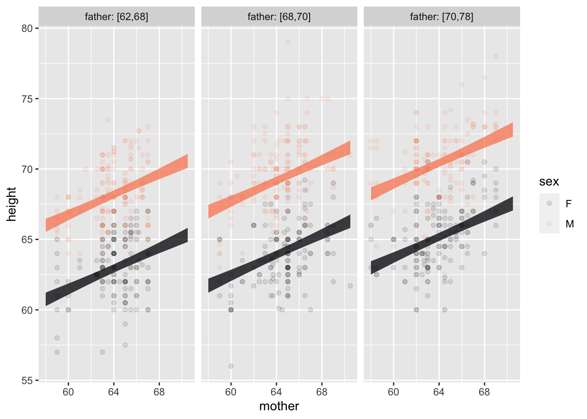

Nats |> names()[1] "country" "year" "GDP" "pop" These are presentation notes for the October 2023 StatChat meeting. For more than 15 years, statistical educators in the Twin Cities region of Minnesota have been gathering a half-dozen times a year at StatChat to share comradeship and teaching insights. Among the schools regularly represented are the University of Minnesota, Macalester College, St. Olaf College, Hamline University, Augsburg University, Carleton College, St. Cloud State University, and Minnesota State University Mankato.
Abstract: “Mere Renovation is Too Little Too Late: We Need to Rethink Our Undergraduate Curriculum from the Ground Up” is the title 2015 paper by George Cobb. Honoring George’s challenge, I have been rethinking and re-designing the introductory statistics course, replacing traditional foundations using modern materials and reconfiguring the living and working spaces to suit today’s applied statistical needs and projects. In the spirit of a “model house” used to demonstrate housing innovations, I’ll take you on a tour of my “model course,” whose materials are available free, open, and online. Among the features you’ll see: an accessible handling of causal reasoning, a unification of the course structure around modeling, a streamlined yet professional-quality computational platform, and an honest presentation of Null Hypothesis Testing that connects it to more current forms of statistical inference.
The “consensus” Stat 101 is 50 years out of date:
My objective: Demonstrate the extent to which it’s possible to overcome these deficiencies with a complete, practicable, no-prerequisite course.
I’m happy to discuss the above points anytime, but that’s not the point of this talk.
Data is always in data frames.
Columns: Variables
Rows: “Specimens” / Unit of observation
Computing concepts:
Usually start with a named data frame, piping it to a function.
Nats |> names()[1] "country" "year" "GDP" "pop" Both the horizontal and vertical axes are mapped to variables.
Just one command: pointplot() produces point plot with automatic jittering as needed.
Tilde expression specifies which variable is mapped to y and x (and, optionally, color and faceting).
Galton |> pointplot(height ~ sex)
Galton |> pointplot(height ~ mother + sex + sex)

Galton |> pointplot(height ~ sex, annot = "violin")Warning in pointplot(Galton, height ~ sex, annot = "violin"): x-axis variable is numerical, so only one violin drawn for all rows.
Perhaps you want to use ntiles() or factor() on that variable?
Galton |> sample_n(size=100) |>
pointplot(height ~ sex, annot = "model", alpha = 0.1, model_alpha=0.75)
Galton |> pointplot(height ~ mother + sex + sex, annot = "model", alpha = 0.1, model_alpha=0.75)

[Perhaps use two class days]
Five basic operations: mutate(), filter(), summarize(), select(), arrange()
Nats# A tibble: 8 × 4
country year GDP pop
<chr> <dbl> <dbl> <dbl>
1 Korea 2020 874 32
2 Cuba 2020 80 7
3 France 2020 1203 55
4 India 2020 1100 1300
5 Korea 1950 100 32
6 Cuba 1950 60 8
7 France 1950 250 40
8 India 1950 300 700Nats |> filter(year == 2020)# A tibble: 4 × 4
country year GDP pop
<chr> <dbl> <dbl> <dbl>
1 Korea 2020 874 32
2 Cuba 2020 80 7
3 France 2020 1203 55
4 India 2020 1100 1300Nats |> summarize(totalpop = sum(pop), .by=year)# A tibble: 2 × 2
year totalpop
<dbl> <dbl>
1 2020 1394
2 1950 780[Perhaps merged into a two-day wrangling unit with Lesson 5]
Pipes, functions, parentheses, arguments, …
[Entirely optional]
Operations for all students
Operations used in demonstrations (and suited to some students)
Computations on variables are always inside the arguments of a function taking a data frame as an input.
Tilde expressions for models and graphics.